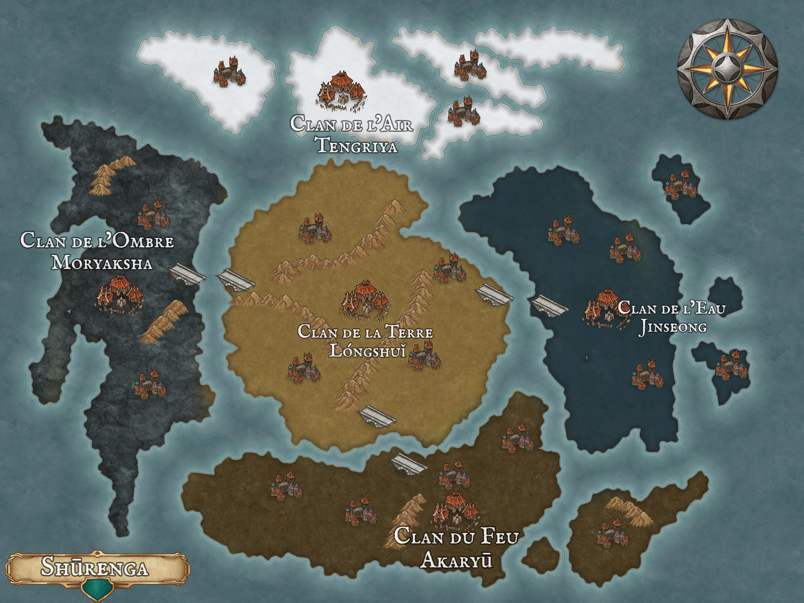

Survolez les territoires pour révéler leurs secrets — cliquez pour en apprendre davantage.

Survolez un territoire sur la carte pour révéler les secrets de ses habitants.
Perchés au-dessus du monde sur leurs îles flottantes, les Tengriya observent les conflits des clans terrestres sans jamais s'y mêler. Leurs chamans lisent les vents et prédisent l'avenir dans les formations de nuages.
✦ Observateurs du CielDans les terres où la lumière ne pénètre jamais, les Moryaksha ont appris à voir sans yeux et à agir sans être vus. Leurs espions infiltrent chaque clan, leurs secrets s'achètent au prix du silence.
✦ Maîtres de l'IllusionAu centre de Shūrenga, les Lóngshuǐ règnent depuis des millénaires. Leurs forteresses de roc noir défient le temps, leurs guerriers portent l'armure des anciens dragons de pierre. La terre leur appartient — pour combien de temps encore ?
✦ Gardiens du CentreLà où la mer intérieure s'étend à l'est, les Jinseong ont bâti leur empire sur l'eau. Leurs flottes de guerre sillonnent des canaux impossibles, et leurs guérisseurs maîtrisent l'art du courant vital qui traverse tout être vivant.
✦ Seigneurs des FlotsNés dans les cendres d'un ancien volcan, les Akaryū ont transformé la destruction en art. Leurs forgeurs créent des armes qui ne rouillent jamais, leurs guerriers-flammes brûlent jusqu'au souvenir de leurs ennemis.
✦ Forgeurs de Destins